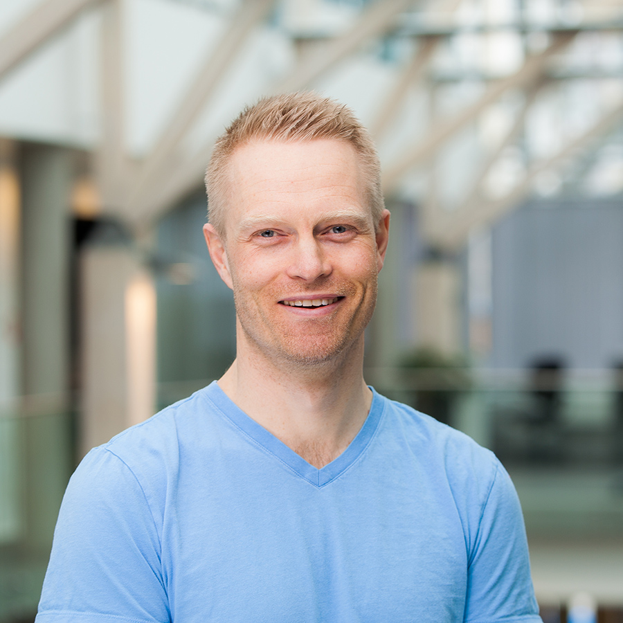

Runar Bergheim
Avinet
Skjemaløse databaser - den sanne vei til frelse eller evig fortapelse
Mikkel Freltoft Krogsholm
Think Big, A Teradata Company
How to build a state of the art open source GIS infrastructure - easy!

Harald K. Jansson
Øyvind Bye Skille
NRK
Journalistikk og kartdata hos en allmennkringkaster

Atle Frenvik Sveen
Norkart, NTNU
Endringslogggenerering for åpne geografiske datasett
Christian Berg Skjetne
Statens vegvesen
Nodered for håndtering av live data
